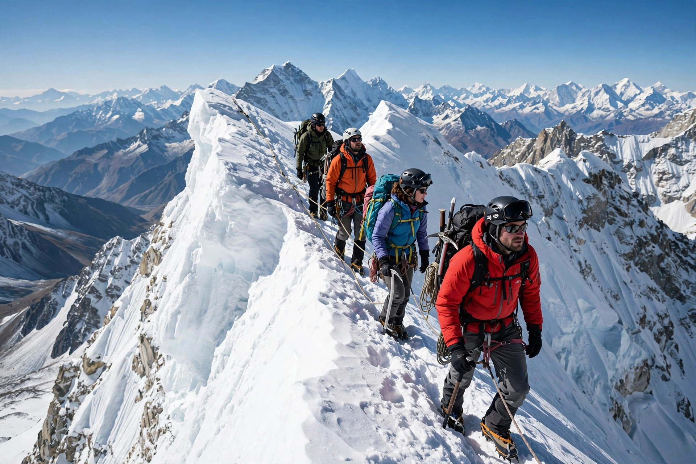

Altitude sickness
| Altitude sickness | |
|---|---|
 | |
| Climbers at high altitude, where the risk of altitude sickness rises sharply | |
| Other names | Acute mountain sickness (AMS); high-altitude sickness |
| Symptoms | Headache, nausea, fatigue, dizziness, poor sleep |
| Cause | Low partial pressure of oxygen at high altitude |
| Treatment | Descent, rest, oxygen; acetazolamide, dexamethasone |
Altitude sickness, also known as acute mountain sickness (AMS), is a collection of symptoms that can occur when a person ascends to high altitude too quickly for the body to acclimatise to the reduced partial pressure of oxygen. It commonly begins above about 2,500 metres (8,000 ft), though susceptible individuals may be affected lower.
Symptoms and progression
AMS is characterised by headache together with symptoms such as nausea, vomiting, fatigue, dizziness and difficulty sleeping. In most cases symptoms are mild and resolve with rest at the same altitude. In a minority of cases AMS progresses to life-threatening conditions: high-altitude cerebral edema (HACE), swelling of the brain causing ataxia and confusion, and high-altitude pulmonary edema (HAPE), fluid accumulation in the lungs causing breathlessness and a cough. Both require immediate descent and medical treatment and can be fatal.
Prevention and treatment
Gradual ascent — with staged acclimatisation days and the maxim "climb high, sleep low" — is the principal prevention. The carbonic anhydrase inhibitor acetazolamide can speed acclimatisation, and dexamethasone is used for severe symptoms. The definitive treatment for worsening illness is descent; supplemental oxygen and portable hyperbaric (Gamow) bags can buy time when descent is impossible.